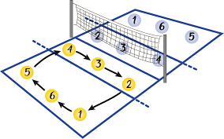
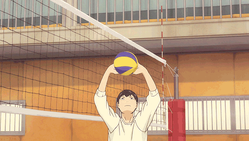
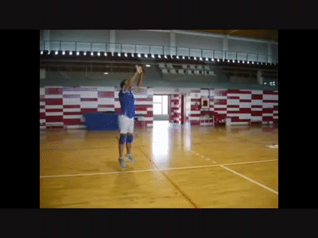
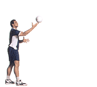
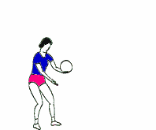

Golpe de manos alta
A la hora de recibir la pelota te puede dejar más comodo el golpe de las manos alta.
Ver aquí

Remate
acción de ataque más agresiva dentro del juego por medio del cual se obtienen la mayor cantidad de puntos.
Ver aquí


Saque de abajo
El saque bajo es ideal para principiantes, enfocándose en la precisión más que en la potencia.
Ver aquí